Formerly, Groovy + Event Sourcing. Now, Grooves is just a name. It supports Event Sourcing on many JVM languages. Examples and tests are included in java, kotlin, and of course, groovy.
Introduction
Event Sourcing is a way of storing data for flexible retrieval. The principle behind Event Sourcing is very simple. We treat our database like a log file. It is a record of everything that happened as events, and we read these events in order to compute the state of things like we do while debugging an application from the logs.
Event Sourcing Concepts
Here are some things that we will need to get familiar with, that are relevant to Event Sourcing.
Aggregate
An aggregate is a type of object that you are interested in managing data about. A classic example would be a bank account.
Event
An event is an atomic change that needs to occur on the aggregate.
A suitable example for the bank account would be a transaction.
It could be an ATM withdrawal, or a check deposit, or an electronic payment.
Most events can be applied while only looking ahead.
When there is a revert event or a merge (which is represented as a deprecates and a deprecatedBy events), that doesn’t hold true.
We will not be modifying the aggregate in our data store. We will however, store the event in the data store, so we know when we read to read it a certain way.
Snapshot
A snapshot is a way of looking at the state of an aggregate at a point in time. In our banking example, this could be your account balance.
CQRS
Event Sourcing works particularly well with CQRS - Command Query Responsibility Segregation. There are a couple of types of objects that are relevant to Event Sourcing and CQRS.
Command
A command is an input which causes one or more events to be stored. It typically represents a broad intention of the user.
Query
A query is a computation that needs to be performed in order to obtain a snapshot.
A query performs a computation like the one below.
Where
-
\$S_N\$ is the Snapshot computed by applying the first
Nevents. -
\$S_0\$ is the empty snapshot.
Most of the time this also holds true
The second one holds true only for forward events.
Representing Events
This is how we’ll be representing events in the documentation.
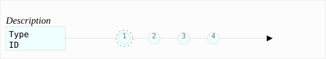
The aggregate is represented by the rectangle. It says its type and its id in the box. Above the box is a description of the aggregate.
The circles with numbers represent events that are applied on the aggregate. They are reasonably spaced apart to show the flow of time. The spacing is not necessarily linear. However, when there are multiple aggregates shown together, the timelines will be in sync.
Creation events will have a dotted circle around them. It doesn’t mean anything special.
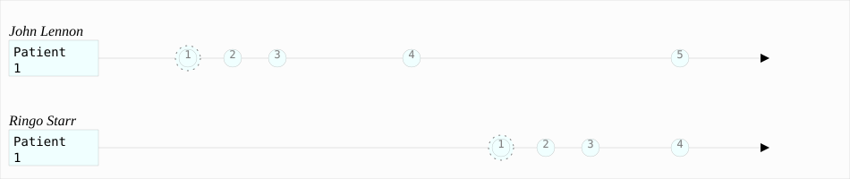
When the time of two events is exactly the same, then they are displayed like this.
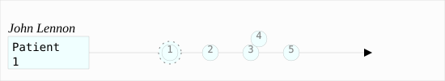
Hurdles
While the theory is very simple, in practice, it’s a little more complicated. The functions that you see above are very simple at first glance, but implementing an entire system based on it requires some patterns. That is the problem that Grooves aims to solve.
Completeness of Queries
When applying events on a Snapshot, you need to be sure that you have handled every single event type. Let’s say you’ve got 3 types of events for an aggregate and 2 snapshots. If you add a new event type, you need to handle it in the computation of both snapshots. When a language has case classes, (sealed classes in Kotlin), it’s easier to achieve this. Alas, Groovy and Java do not have case classes.
There are some special kinds of Events that require a lot of complex handling:
Reverting Events
Sometimes events are entered into an aggregate’s timeline in error. This could be a system error, or a human error. When this happens, for the business logic to make sense, the system should behave as if that event never occurred. However, for auditing purposes, and for preserving a reasonable system, the original event as well as the moment the error was detected need to be tracked.
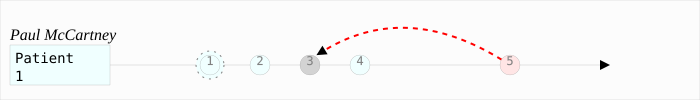
In the diagram above, we see that event 3 was performed, and later after event 4, we realized that 3 should not have occurred. Now, we insert a special event, 5, that causes a revert of 3. Once the system processes the data correctly, this is equivalent to what follows.
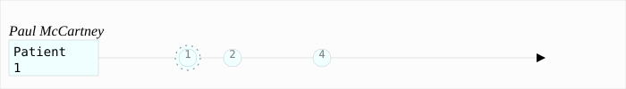
Depending on how many mistakes people and systems make, this could be much more complicated. For example, you might be able to revert a revert event.
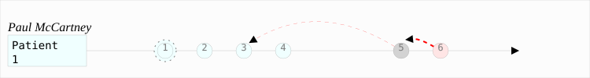
This should be interpreted as 6 cancels out 5, so 5 can no more cancel out 3.
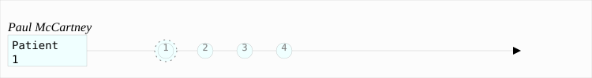
Merging Aggregates
DeprecatedBy and Deprecates is a pair of events that work together on aggregates of the same type.
Sometimes, real world things merge together.
For example, companies get merged or acquired.
Sometimes, you accidentally create two aggregates that represent the same thing.
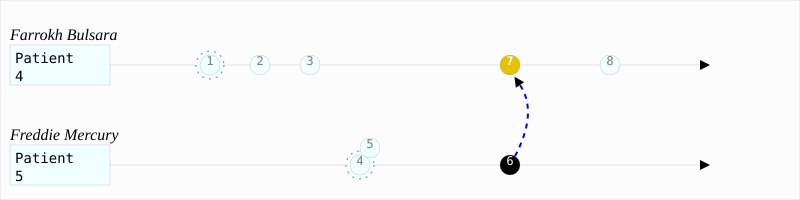
In this case, we created two patients that actually represent the same person. Then we realized that this needs to be the same person. While reading this, we would treat it as if it was like this.
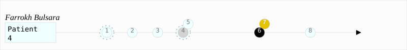
4 is grayed out because it’s a creation event, and, this is the second creation event for the aggregate. We will read that event, but not apply it in any meaningful way.
Typically, we cannot apply any new events after 6 on Aggregate 5. The exception to the rule is when we’re reverting the merge. That might not always be true. Some systems might choose to continue adding events on an aggregate like 5.
Reverting Merges
Let’s assume we got confused with a pair of aggregates like these and performed a merge like this.
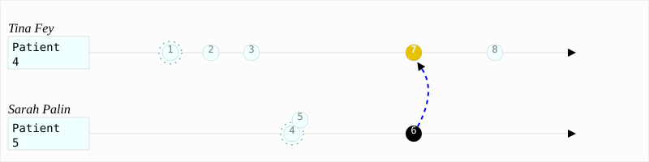
The correct way of reverting fixing this mistake, would be to perform a pair of reverts. This is complicated, but necessary in order to make the reads on both aggregates result in the merge being ignored.
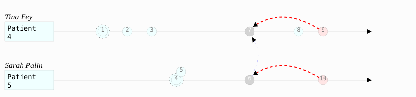
Performing joins
In an event sourced system, even joins are just events. That way we can preserve their temporal changes.
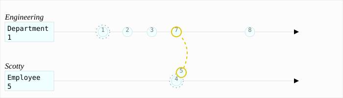
Performing disjoins
Since joins can change with time, you could have a situation where you need to perform a disjoin.
In our example here, Mr Spock stops being the Science Officer when he becomes captain.
For that to happen, we need to represent that the relationship between the department Science and Mr Spock is severed at a point in time.
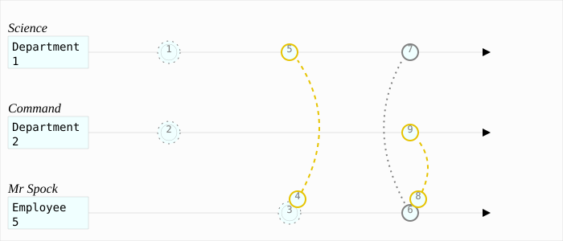
You might be tempted to reuse the revert capability here. A disjoin is different from a revert. The difference between a disjoin and a revert is the same as the difference between a divorce and an annulment.
How Grooves solves it
Grooves assumes nothing about your persistence framework or whether you’re building a webapp or a batch application. Grooves only offers some tools to help you build your own event sourced system.
-
Interfaces for the Aggregate, Event (and its special subtypes) and Snapshot.
-
A set of interfaces with default methods that help you write queries.
-
If you’re using groovy, annotations to mark these and AST Transformations to ensure all event types are covered in a Query implementation.
This allows you to use Grooves with a lot of different frameworks. There are examples in the repository for some options you could use.
Event Sourcing with Grooves
This section contains example code with annotations that indicate what is being done, and why. We will be using 4 different kinds of projects.
-
Java - A java project that uses a few in memory collections as it’s storage mechanism. It is written in Java 8, and uses JavaEE. In the case of Java code, we’ll be skipping getters and setters to keep examples concise. For the code to actually work, those would be required.
-
Groovy - A project that uses SpringBoot and JPA for persistence. It’s written using Groovy. This uses RxJava2 as the Reactive Streams Framework.
-
Kotlin - This is a SpringBoot Reactive Web project that uses RxMongo for persistence. This example uses Spring Reactor as the Reactive Streams Framework.
Dependencies
The examples here use gradle to manage dependencies. You could very well be using Maven, or ant+ivy, or leiningen, or sbt.
repositories {
// ... other repositories ...
mavenCentral() (1)
}
dependencies {
// ... other dependencies ...
implementation 'com.github.rahulsom:grooves-java:0.1.0-dev.1+74a17bc' (2)
}| 1 | In this example, we’re using mavenCentral. You could also be using jcenter or google.
As long as your private artifact repository mirrors mavenCentral, you can use that as well. |
| 2 | grooves-api contains the interfaces for your queries.
It has a dependency on grooves-types.
That contains the interfaces for your aggregates, events, and snapshots. |
repositories {
// ... other repositories ...
mavenCentral() (1)
}
dependencies {
// ... other dependencies ...
implementation 'com.github.rahulsom:grooves-groovy:0.1.0-dev.1+74a17bc' (2)
}| 1 | In this example, we’re using mavenCentral. You could also be using jcenter or google.
As long as your private artifact repository mirrors mavenCentral, you can use that as well. |
| 2 | grooves-groovy contains support for writing idiomatic groovy code.
It has a dependency on grooves-api which contains interfaces for your queries.
It also has a transitive dependency on grooves-types.
That contains the interfaces for your aggregates, events, and snapshots. |
repositories {
// ... other repositories ...
mavenCentral() (1)
}
dependencies {
// ... other dependencies ...
implementation 'com.github.rahulsom:grooves-api:0.1.0-dev.1+74a17bc' (2)
}| 1 | In this example, we’re using mavenCentral. You could also be using jcenter or google.
As long as your private artifact repository mirrors mavenCentral, you can use that as well. |
| 2 | grooves-api contains the interfaces for your queries.
It has a dependency on grooves-types.
That contains the interfaces for your aggregates, events, and snapshots. |
Aggregates
In our examples, to begin with, we will use one aggregate - a patient. We’ll model our system such that there are events that get applied on a Patient’s timeline.
To uniquely identify a patient, we’re assuming, all we need is a uniqueId.
No name, no address, no other information.
The rest of the information will be brought in using events.
import com.github.rahulsom.grooves.java.Aggregate;
import java.io.Serializable;
import lombok.Data;
@Data
@Aggregate (1)
public class Patient implements Serializable {
private Long id;
private final String uniqueId;
}| 1 | This annotation will assist in checking for completeness of queries.
There are two other annotations we’ll see - @Event and @Query.
Together, the three will help us ensure that our queries cover all events.
This is optional, but highly recommended. |
import groovy.transform.EqualsAndHashCode
import groovy.transform.ToString
import jakarta.persistence.*
@Entity
@Table(uniqueConstraints = [
@UniqueConstraint(name = 'UK_PATIENT_UNIQUEID', columnNames = ['uniqueId']),
])
@ToString(includeSuperProperties = true, includeNames = true, includePackage = false)
@JsonIgnoreProperties(['hibernateLazyInitializer', 'handler'])
@Aggregate (1)
class Patient {
@Id Long id
String uniqueId
}| 1 | This annotation will assist in checking for completeness of queries.
There are two other annotations we’ll see - @Event and @Query.
Together, the three will help us ensure that our queries cover all events.
This is optional, but highly recommended. |
class Patient(
var uniqueId: String? = null,
) { (1)
var id: String? = null
override fun toString() = "Patient(uniqueId=$uniqueId, id=$id)"
}| 1 | Since 0.5.0, there isn’t really anything special to do for declaring Aggregates. |
Events
In our example, we’re going to have a bunch of events that will modify the computed state of the Patient.
Your Base Event
Let’s start with the PatientEvent first.
PatientEvent is the base event for all events related to Patient.
// Some imports omitted
@Data
public abstract class PatientEvent implements BaseEvent<Patient, Long, PatientEvent> { (1)
private Patient aggregate;
private Long id;
private RevertEvent<Patient, Long, PatientEvent> revertedBy; (2)
private Date timestamp; (3)
private long position; (4)
@Override
@NotNull
public Publisher<Patient> getAggregateObservable() { (5)
return toPublisher(aggregate != null ? just(aggregate) : empty());
}
}| 1 | You’ll have to extend BaseEvent. |
| 2 | This is typically transient from a persistence perspective. Since we’re using collections for persistence, it doesn’t make much difference. |
| 3 | Timestamp is used for time based filtering and ordering |
| 4 | Position is used for version based filtering and ordering. |
| 5 | The aggregate observable allows for lazy fetching of the aggregate. Again, since we’re using collections, it doesn’t matter. |
// All imports omitted
@Entity
@Inheritance(strategy = InheritanceType.SINGLE_TABLE)
@DiscriminatorColumn(name = 'eventType')
@SuppressWarnings(['AbstractClassWithoutAbstractMethod'])
abstract class PatientEvent implements BaseEvent<Patient, Long, PatientEvent> {
(1)
@GeneratedValue @Id Long id
@Transient RevertEvent<Patient, Long, PatientEvent> revertedBy (2)
@Column(nullable = false) Date timestamp (3)
@Column(nullable = false) long position (4)
@ManyToOne Patient aggregate
Publisher<Patient> getAggregateObservable() {
(5)
aggregate == null ? empty() : just(aggregate)
}
}| 1 | You’ll have to extend BaseEvent. |
| 2 | This is transient from a persistence perspective. |
| 3 | Timestamp is used for time based filtering and ordering |
| 4 | Position is used for version based filtering and ordering. |
| 5 | The aggregate observable allows for lazy fetching of the aggregate. In our case, it doesn’t matter much since we’re using JPA, which is blocking in nature. |
// All imports omitted
sealed class PatientEvent : BaseEvent<Patient, String, PatientEvent> { (1) (2)
@Id
override var id: String? = null
var aggregateId: String? = null
@Transient
override var revertedBy: RevertEvent<Patient, String, PatientEvent>? = null (3)
@JsonFormat(pattern = "yyyy-MM-dd'T'HH:mm:ss.SSSZ")
override lateinit var timestamp: Date (4)
override var position: Long = 0 (5)
fun getType(): String = this.javaClass.simpleName
@JsonIgnore
override fun getAggregateObservable(): Publisher<Patient> =
(6)
aggregateId?.let {
BeansHolder.context?.getBean(PatientRepository::class.java)?.findById(it)
} ?: empty()
override var aggregate: Patient?
@JsonIgnore
get() = Mono.from(getAggregateObservable()).block()
set(value) {
aggregateId = value!!.id
}
}| 1 | We’re using sealed classes in Kotlin. We’ll add more classes inside it as we progress. This helps us achieve completeness without the need to customize the compilation. |
| 2 | You’ll have to extend BaseEvent. |
| 3 | This is transient from a persistence perspective. |
| 4 | Timestamp is used for time based filtering and ordering |
| 5 | Position is used for version based filtering and ordering. |
| 6 | The aggregate observable allows for lazy fetching of the aggregate. In our case, it doesn’t matter much since we’re using Hibernate, which is blocking in nature. |
Your business events
Next up, let’s look at our first event, PatientCreated.
@Data
@EqualsAndHashCode(callSuper = true)
@Event(Patient.class) (1)
public class PatientCreated extends PatientEvent { (2)
private final String name;
}| 1 | The @Event annotation is the second step to achieving completeness of events.
It accepts as a param, the Aggregate over which it applies. |
| 2 | For most events you’re interested in as a user, you’ll just have to extend PatientEvent. |
@Entity
@Event(Patient) (1)
class PatientCreated extends PatientEvent {
(2)
String name
@Override String toString() {
"PatientCreated(name=$name)"
}
}| 1 | The @Event annotation is the second step to achieving completeness of events.
It accepts as a param, the Aggregate over which it applies. |
| 2 | For most events you’re interested in as a user, you’ll just have to extend PatientEvent. |
sealed class PatientEvent : BaseEvent<...> {
// ... skipping stuff already there ...
sealed class Applicable : PatientEvent() { (1)
data class Created(
val name: String,
) : Applicable() { (2)
fun getAudit(): String = "$id - Created '$name'"
}
}
}| 1 | First we create a sealed class within the PatientEvent called Applicable.
What we call it doesn’t matter.
All application events will go there. |
| 2 | For most events you’re interested in as a user, you’ll just have to extend Applicable. |
In our example, we’ll have two more business events.
-
ProcedurePerformedthat gives you a procedure code and the cost -
PaymentMadewhich gives you the amount paid
Please look at the source to see how they are implemented.
Standard Grooves Events
There are some Standard Grooves Events - JoinEvent, DisjoinEvent, DeprecatedBy, Deprecates, RevertEvent. Their implementation is similar to one another, but slightly different from your business events.
We are going to walk through the RevertEvent over here.
import com.github.rahulsom.grooves.api.events.RevertEvent;
import lombok.Data;
import lombok.EqualsAndHashCode;
@EqualsAndHashCode(callSuper = true)
@Data
public class PatientEventReverted extends PatientEvent (1)
implements RevertEvent<Patient, Long, PatientEvent> { (2)
private final Long revertedEventId; (3)
}| 1 | Like your business events, you’ll extend PatientEvent. |
| 2 | In addition, you’ll implement the RevertEvent interface. |
| 3 | And you’ll have to give it a property revertedEventId. |
@Entity
class PatientEventReverted extends PatientEvent (1)
implements RevertEvent<Patient, Long, PatientEvent> {
(2)
Long revertedEventId (3)
@Override String toString() {
"PatientEventReverted(revertedEventId=$revertedEventId)"
}
}| 1 | Like your business events, you’ll extend PatientEvent.
You do not need to annotate it as an Event.
Even if you do, you cannot process this event. |
| 2 | In addition, you’ll implement the RevertEvent interface. |
| 3 | And you’ll have to give it a property revertedEventId. |
sealed class PatientEvent : BaseEvent<...> {
// ... skipping stuff already there ...
data class Reverted(
override val revertedEventId: String,
) : (1)
PatientEvent(),
(2)
RevertEvent<Patient, String, PatientEvent> { (3)
fun getAudit(): String = "$id - Revert $revertedEventId"
}
}| 1 | You’ll have to give it a property revertedEventId. |
| 2 | Like your Applicable in business events, you’ll extend PatientEvent. |
| 3 | In addition, you’ll implement the RevertEvent interface. |
Snapshots
Let’s start with a snapshot that manages account balance for a patient.
@Data
public class PatientAccount
implements Snapshot<Patient, Long, Long, PatientEvent>, (1)
Serializable {
private Long id;
private Patient aggregate;
private Patient deprecatedBy;
private List<Patient> deprecates = new ArrayList<>();
private long lastEventPosition; (2)
private Date lastEventTimestamp; (3)
private String name;
private BigDecimal balance = new BigDecimal(0);
private BigDecimal moneyMade = new BigDecimal(0);
public Publisher<Patient> getAggregateObservable() { (4)
return toPublisher(aggregate != null ? just(aggregate) : empty());
}
public Publisher<Patient> getDeprecatedByObservable() { (5)
return toPublisher(deprecatedBy != null ? just(deprecatedBy) : empty());
}
public Publisher<Patient> getDeprecatesObservable() { (6)
return toPublisher(from(deprecates));
}
}| 1 | For most snapshots, you may implement Snapshot. |
| 2 | The lastEventPosition is useful when locating snapshots by version. |
| 3 | The lastEventTimestamp is useful when locating snapshots by timestamp. |
| 4 | The aggregateObservable getter points to the aggregate from the snapshot. |
| 5 | The deprecatedByObservable points to the deprecator of the snapshot’s aggregate.
It is empty when the aggregate is not deprecated. |
| 6 | The deprecatesObservable points to the aggregates deprecated by snapshot’s aggregate. |
class PatientAccount implements Snapshot<Patient, Long, Long, PatientEvent> {
(1)
@GeneratedValue @Id Long id
@Column(nullable = false) long lastEventPosition (2)
@JsonFormat(pattern = "yyyy-MM-dd'T'HH:mm:ss.SSSZ")
@Column(nullable = false) Date lastEventTimestamp (3)
@OneToOne Patient deprecatedBy
@OneToMany @JoinTable(name = 'PatientAccountDeprecates') Set<Patient> deprecates
@ManyToOne Patient aggregate
@Column(nullable = false) BigDecimal balance = 0.0
@Column(nullable = false) BigDecimal moneyMade = 0.0
@Column(nullable = false) String name
int processingErrors = 0
@Override @JsonIgnore Publisher<Patient> getAggregateObservable() {
(4)
aggregate == null ? empty() : just(aggregate)
}
@Override @JsonIgnore Publisher<Patient> getDeprecatedByObservable() {
(5)
deprecatedBy == null ? empty() : just(deprecatedBy)
}
@Override @JsonIgnore Publisher<Patient> getDeprecatesObservable() {
(6)
fromIterable(deprecates.toList())
}
}| 1 | For most snapshots, you may implement Snapshot. |
| 2 | The lastEventPosition is useful when locating snapshots by version. |
| 3 | The lastEventTimestamp is useful when locating snapshots by timestamp. |
| 4 | The aggregateObservable getter points to the aggregate from the snapshot. |
| 5 | The deprecatedByObservable points to the deprecator of the snapshot’s aggregate.
It is empty when the aggregate is not deprecated. |
| 6 | The deprecatesObservable points to the aggregates deprecated by snapshot’s aggregate. |
@Configurable
class PatientAccount : Snapshot<Patient, String, String, PatientEvent> { (1)
override var id: String? = null
override var lastEventPosition: Long = 0 (2)
@JsonFormat(pattern = "yyyy-MM-dd'T'HH:mm:ss.SSSZ")
override var lastEventTimestamp: Date? = null (3)
val deprecatesIds: MutableList<String> = mutableListOf()
private var deprecator: Patient? = null
var aggregateId: String? = null
var name: String? = null
var balance: BigDecimal = BigDecimal.ZERO
var moneyMade: BigDecimal = BigDecimal.ZERO
fun getDeprecatedBy() = deprecator
@JsonIgnore
override fun getAggregateObservable() =
(4)
aggregateId?.let { patientRepository!!.findAllById(just(it)) } ?: empty()
override fun setAggregate(aggregate: Patient) {
this.aggregateId = aggregate.id
}
@JsonIgnore
@Autowired
var patientRepository: PatientRepository? = null
@JsonIgnore
override fun getDeprecatedByObservable() =
(5)
deprecator?.let { just(it) } ?: Mono.empty()
override fun setDeprecatedBy(deprecatingAggregate: Patient) {
deprecator = deprecatingAggregate
}
@JsonIgnore
override fun getDeprecatesObservable() =
(6)
if (deprecatesIds.isEmpty()) {
empty()
} else {
patientRepository!!.findAllById(deprecatesIds)
}
}| 1 | For most snapshots, you may implement Snapshot. |
| 2 | The lastEventPosition is useful when locating snapshots by version. |
| 3 | The lastEventTimestamp is useful when locating snapshots by timestamp. |
| 4 | The aggregateObservable getter points to the aggregate from the snapshot. |
| 5 | The deprecatedByObservable points to the deprecator of the snapshot’s aggregate.
It is empty when the aggregate is not deprecated. |
| 6 | The deprecatesObservable points to the aggregates deprecated by snapshot’s aggregate. |
The reason for aggregateObservable, deprecatedByObservable and deprecatesObservable being rx.Observable is to allow asynchronous data access layers to work well.
In our examples, we have one more snapshot - PatientHealth which lists codes for procedures and the dates they were performed.
Queries
// You don't need to have an intermediate type to manage your queries, but it does make code reuse better.
public interface CustomQuerySupport<
SnapshotT extends Snapshot<Patient, Long, Long, PatientEvent> & Serializable (1)
>
extends QuerySupport<Patient, Long, PatientEvent, Long, SnapshotT> { (2)
@Override
default Publisher<SnapshotT> getSnapshot(long maxPosition, @NotNull Patient aggregate) {
(3)
}
@NotNull
@Override
default Publisher<SnapshotT> getSnapshot(@Nullable Date maxTimestamp, @NotNull Patient aggregate) { (4)
}
@Override
default boolean shouldEventsBeApplied(@NotNull SnapshotT snapshot) { (5)
}
@NotNull
@Override
default Publisher<EventApplyOutcome> onException(
@NotNull Exception e, @NotNull SnapshotT snapshot, @NotNull PatientEvent event) { (6)
}
@NotNull
@Override
default Publisher<PatientEvent> getUncomputedEvents(
@NotNull Patient aggregate, @Nullable SnapshotT lastSnapshot, long version) {
(7)
}
@NotNull
@Override
default Publisher<PatientEvent> getUncomputedEvents(
@NotNull Patient aggregate, @Nullable SnapshotT lastSnapshot, @NotNull Date snapshotTime) {
(8)
}
}
// This is the implementation we need
@Getter
@Query(aggregate = Patient.class, snapshot = PatientAccount.class) (9)
public class PatientAccountQuery implements CustomQuerySupport<PatientAccount> { (10)
@NotNull
@Override
public PatientAccount createEmptySnapshot() { (11)
return new PatientAccount();
}
public Publisher<EventApplyOutcome> applyPatientCreated(PatientCreated event, PatientAccount snapshot) { (12)
if (snapshot.getAggregate() == event.getAggregate()) {
snapshot.setName(event.getName());
}
return toPublisher(just(CONTINUE)); (13)
}
public Publisher<EventApplyOutcome> applyProcedurePerformed(ProcedurePerformed event, PatientAccount snapshot) {
final double cost = event.getCost().doubleValue();
final double originalBalance = snapshot.getBalance().doubleValue();
snapshot.setBalance(BigDecimal.valueOf(originalBalance + cost));
return toPublisher(just(CONTINUE));
}
public Publisher<EventApplyOutcome> applyPaymentMade(PaymentMade event, PatientAccount snapshot) {
final double amount = event.getAmount().doubleValue();
final double originalBalance = snapshot.getBalance().doubleValue();
final double originalMoneyMade = snapshot.getMoneyMade().doubleValue();
snapshot.setBalance(BigDecimal.valueOf(originalBalance - amount));
snapshot.setMoneyMade(BigDecimal.valueOf(originalMoneyMade + amount));
return toPublisher(just(CONTINUE));
}
}| 1 | This is a placeholder for the snapshot we’ll compute. |
| 2 | QuerySupport allows computing both temporal and versioned snapshots. |
| 3 | The implementation of this method will return a snapshot that’s older than the maxPosition. |
| 4 | The implementation of this method will return a snapshot that’s older than the maxTimestamp. |
| 5 | This allows the query to have some control over when to stop applying events on a snapshot. |
| 6 | This is an exception handler.
You can decide to CONTINUE or RETURN. |
| 7 | The implementation of this method must return all events for an aggregate that are more recent than the last event of lastSnapshot, but lead up to version.
Think of the range as exclusive of lastSnapshot, but inclusive of version. |
| 8 | The implementation of this method must return all events for an aggregate that are more recent than the last event of lastSnapshot, but lead up to snapshotTime.
Think of the range as exclusive of lastSnapshot, but inclusive of snapshotTime. |
| 9 | This annotation is the final step in verification of completeness.
The AST Transformation checks that all @Event s associated with the @Aggregate are accounted for in the @Query. |
| 10 | Here we implement our default interface |
| 11 | This method gets called if no prior snapshot that is usable is found. |
| 12 | We name our methods apply<EventType>.
This is required.
It is not enforced though. |
| 13 | Each of these methods takes the event and the snapshot as inputs and returns an Publisher<EventApplyOutcome> as output.
It can CONTINUE or RETURN. |
@Query(aggregate = Patient, snapshot = PatientAccount) (1)
class PatientAccountQuery implements
QuerySupport<Patient, Long, PatientEvent, Long, PatientAccount> {
(2)
@NotNull
@Override
Publisher<PatientAccount> getSnapshot(long maxPosition, @NotNull Patient aggregate) {
(3)
}
@NotNull
@Override
Publisher<PatientAccount> getSnapshot(Date maxTimestamp, @NotNull Patient aggregate) {
(4)
}
@Override
boolean shouldEventsBeApplied(@NotNull PatientAccount snapshot) {
(5)
true
}
@NotNull
@Override
Publisher<EventApplyOutcome> onException(
@NotNull Exception e, @NotNull PatientAccount snapshot, @NotNull PatientEvent event) {
(6)
snapshot.processingErrors++
just(CONTINUE)
}
@NotNull
@Override
Publisher<PatientEvent> getUncomputedEvents(
@NotNull Patient patient, PatientAccount lastSnapshot, long version) {
(7)
}
@NotNull
@Override Publisher<PatientEvent> getUncomputedEvents(
@NotNull Patient aggregate, PatientAccount lastSnapshot, @NotNull Date snapshotTime) {
(8)
}
@NotNull
@Override PatientAccount createEmptySnapshot() {
(9)
new PatientAccount(deprecates: [])
}
@Override
void addToDeprecates(@NotNull PatientAccount snapshot, @NotNull Patient deprecatedAggregate) {
snapshot.deprecates << deprecatedAggregate
}
Publisher<EventApplyOutcome> applyPatientCreated(
PatientCreated event, PatientAccount snapshot) {
(10)
if (snapshot.aggregate == event.aggregate) {
snapshot.name = event.name
}
just(CONTINUE) (11)
}
Publisher<EventApplyOutcome> applyProcedurePerformed(
ProcedurePerformed event, PatientAccount snapshot) {
snapshot.balance += event.cost
just(CONTINUE)
}
Publisher<EventApplyOutcome> applyPaymentMade(
PaymentMade event, PatientAccount snapshot) {
snapshot.balance -= event.amount
snapshot.moneyMade += event.amount
just(CONTINUE)
}
}| 1 | This annotation is the final step in verification of completeness.
The AST Transformation checks that all @Event s associated with the @Aggregate are accounted for in the @Query. |
| 2 | QuerySupport allows computing both temporal and versioned snapshots. |
| 3 | The implementation of this method will return a snapshot that’s older than the maxPosition. |
| 4 | The implementation of this method will return a snapshot that’s older than the maxTimestamp. |
| 5 | This allows the query to have some control over when to stop applying events on a snapshot. |
| 6 | This is an exception handler.
You can decide to CONTINUE or RETURN. |
| 7 | The implementation of this method must return all events for an aggregate that are more recent than the last event of lastSnapshot, but lead up to version.
Think of the range as exclusive of lastSnapshot, but inclusive of version. |
| 8 | The implementation of this method must return all events for an aggregate that are more recent than the last event of lastSnapshot, but lead up to snapshotTime.
Think of the range as exclusive of lastSnapshot, but inclusive of snapshotTime. |
| 9 | This method gets called if no prior snapshot that is usable is found. |
| 10 | We name our methods apply<EventType>.
This is required.
Your IDE might not point out if you don’t do it right, but the compiler will. |
| 11 | Each of these methods takes the event and the snapshot as inputs and returns an Publisher<EventApplyOutcome> as output.
It can CONTINUE or RETURN. |
@Component
class PatientAccountQuery(
@param:Autowired val patientEventRepository: PatientEventRepository,
@param:Autowired val patientAccountRepository: PatientAccountRepository,
) : QuerySupport<Patient, String, PatientEvent, String, PatientAccount>,
(1)
SimpleQuery<
Patient,
String,
PatientEvent,
PatientEvent.Applicable,
String,
PatientAccount,
> { (2)
override fun getExecutor() =
SimpleExecutor<
Patient,
String,
PatientEvent,
PatientEvent.Applicable,
String,
PatientAccount,
PatientAccountQuery,
>() (3)
override fun createEmptySnapshot() = PatientAccount() (4)
override fun getSnapshot(
maxPosition: Long,
aggregate: Patient,
) = (5)
patientAccountRepository.findByAggregateIdAndLastEventPositionLessThan(
aggregate.id!!,
maxPosition,
)
override fun getSnapshot(
maxTimestamp: Date?,
aggregate: Patient,
) = (6)
patientAccountRepository.findByAggregateIdAndLastEventTimestampLessThan(
aggregate.id!!,
maxTimestamp!!,
)
override fun shouldEventsBeApplied(snapshot: PatientAccount) = true (7)
override fun addToDeprecates(
snapshot: PatientAccount,
deprecatedAggregate: Patient,
) {
snapshot.deprecatesIds.add(deprecatedAggregate.id!!)
}
override fun onException(
e: Exception,
snapshot: PatientAccount,
event: PatientEvent,
) = (8)
just(CONTINUE)
override fun getUncomputedEvents(
aggregate: Patient,
lastSnapshot: PatientAccount?,
version: Long,
) = (9)
patientEventRepository.findAllByPositionRange(
aggregate.id!!,
lastSnapshot?.lastEventPosition ?: 0,
version,
)
override fun getUncomputedEvents(
aggregate: Patient,
lastSnapshot: PatientAccount?,
snapshotTime: Date,
) = (10)
lastSnapshot?.lastEventTimestamp?.let {
patientEventRepository.findAllByTimestampRange(
aggregate.id!!,
it,
snapshotTime,
)
} ?: patientEventRepository.findAllByAggregateIdAndTimestampLessThan(
aggregate.id!!,
snapshotTime,
)
override fun applyEvent(
event: PatientEvent.Applicable,
snapshot: PatientAccount,
) = when (event) { (11)
is PatientEvent.Applicable.Created -> {
if (event.aggregateId == snapshot.aggregateId) {
snapshot.name = event.name
}
just(CONTINUE)
}
is PatientEvent.Applicable.ProcedurePerformed -> {
snapshot.balance = snapshot.balance.add(event.cost)
just(CONTINUE)
}
is PatientEvent.Applicable.PaymentMade -> {
snapshot.balance = snapshot.balance.subtract(event.amount)
snapshot.moneyMade = snapshot.moneyMade.add(event.amount)
just(CONTINUE)
}
}
}| 1 | QuerySupport allows computing both temporal and versioned snapshots. |
| 2 | SimpleQuery makes working with Kotlin better.
It calls the applyEvent method instead of calling apply<EventType>.
With Kotlin applyEvent is sufficient, because you can use sealed classes to achieve completeness. |
| 3 | SimpleExecutor is what wires up SimpleQuery correctly. |
| 4 | This method gets called if no prior snapshot that is usable is found. |
| 5 | The implementation of this method will return a snapshot that’s older than the maxPosition. |
| 6 | The implementation of this method will return a snapshot that’s older than the maxTimestamp. |
| 7 | This allows the query to have some control over when to stop applying events on a snapshot. |
| 8 | This is an exception handler.
You can decide to CONTINUE or RETURN. |
| 9 | The implementation of this method must return all events for an aggregate that are more recent than the last event of lastSnapshot, but lead up to version.
Think of the range as exclusive of lastSnapshot, but inclusive of version. |
| 10 | The implementation of this method must return all events for an aggregate that are more recent than the last event of lastSnapshot, but lead up to snapshotTime.
Think of the range as exclusive of lastSnapshot, but inclusive of snapshotTime. |
| 11 | applyEvent handles all events under Applicable.
Kotlin will check for completeness when you use the when keyword as part of an expression. |
Joins
Joins are just snapshots of a different kind. With Grooves, they’re always One-To-Many. One-To-One is just a special case of One-To-Many. This is a good example for [join events] in a SpringBoot JPA project.
class ZipcodeGotPatient extends ZipcodeEvent (1)
implements JoinEvent<Zipcode, Long, ZipcodeEvent, Patient> {
(2)
@ManyToOne Patient patient
@Override Publisher<Patient> getJoinAggregateObservable() {
just(patient)
}
}
class ZipcodeLostPatient extends ZipcodeEvent implements
DisjoinEvent<Zipcode, Long, ZipcodeEvent, Patient> {
(3)
@ManyToOne Patient patient
@Override Publisher<Patient> getJoinAggregateObservable() {
just(patient)
} (4)
}| 1 | This extends a base class corresponding to its aggregate |
| 2 | This implements JoinEvent to mark the beginning of a join |
| 3 | This class implements DisjoinEvent to mark the end of a join |
| 4 | The method getJoinAggregateObservable allows redirections from deprecated aggregates. |
The query used to compute a Join is slightly different.
It only concerns itself with two forward events - the JoinEvent and the DisjoinEvent.
This is a good example for such a query.
class ZipcodePatientsQuery implements JoinSupport< (1)
Zipcode, (2)
Long, ZipcodeEvent, (3)
Patient, (4)
Long, ZipcodePatients, (5)
ZipcodeGotPatient, ZipcodeLostPatient (6)
> {
(7)
final Class<ZipcodeGotPatient> joinEventClass = ZipcodeGotPatient (8)
final Class<ZipcodeLostPatient> disjoinEventClass = ZipcodeLostPatient (9)
// Skipping familiar methods (10)
}| 1 | JoinSupport is similar to QuerySupport.
It does not require implementing methods for each event. |
| 2 | This says that the aggregate for which this computes joins is Zipcode. |
| 3 | This says that the base class for events for which this computes joins is ZipcodeEvent whose id is Long. |
| 4 | This says that the joined aggregate for which this computes joins is Patient. |
| 5 | This says that the join computed is ZipcodePatients whose id is String. |
| 6 | The events that represent a join and a disjoin are ZipcodeGotPatient, ZipcodeLostPatient respectively. |
| 7 | This says that the class of the query is ZipcodePatientsQuery. |
| 8 | This is another reference to the disjoin event. |
| 9 | This is another reference to the join event. |
| 10 | Methods that you’ve seen in typical queries have been skipped here.
You don’t however need applyXXXEvent methods. |
FRP Style
Sometimes, it is not ideal to create classes to implement the queries. Since 0.4.0, grooves has experimental support for doing this in a somewhat Functional Reactive Programming style.
This is an example for such a query in Kotlin.
private val query =
Grooves
.versioned<Account, String, Transaction, String, Balance>() (1)
.withSnapshot { version, account ->
(2)
log.info("getBalance($account, $version)")
Maybe
.fromCallable { database.getBalance(account, version) }
.map { dbBalance -> Balance(dbBalance) }
.toFlowable()
}.withEmptySnapshot { Balance() } (3)
.withEvents { account, balance, version ->
(4)
val transaction =
ContextManager.get()?.get("transaction") as Transaction?
if (transaction != null) {
just(transaction)
} else {
empty()
}
}.withApplyEvents { balance -> true } (5)
.withDeprecator { balance, deprecatingAccount -> (6)
}.withExceptionHandler { exception, balance, transaction ->
(7)
log.warn("$exception occurred")
just(CONTINUE)
}.withEventHandler(this::updateBalance) (8)
.build() (9)
private fun updateBalance(
transaction: Transaction,
balance: Balance,
) = when (transaction) {
is Transaction.Deposit -> {
balance.balance += transaction.amount
just(CONTINUE)
}
is Transaction.Withdraw -> {
balance.balance -= transaction.amount
just(CONTINUE)
}
}| 1 | Grooves is a class that allows creating FRP style queries.
You can start with versioned or temporal.
It returns a query builder. |
| 2 | This method helps Grooves fetch a prior snapshot from the datastore. account is an aggregate. |
| 3 | This method helps Grooves create a new snapshot when none was found by the previous method. |
| 4 | This method helps Grooves fetch events since the last known snapshot.
account is the aggregate.
balance is the last known snapshot. |
| 5 | This method is optional and by default returns true.
balance is the snapshot.
This allows inspecting the snapshot to determine if Grooves should continue processing events. |
| 6 | This method allows Grooves to execute some code when a deprecation event is found.
balance is the snapshot
deprecatingAccount is the aggregate the deprecates the aggregate of balance. |
| 7 | This method helps Grooves decide what to do on an exception.
Returning an observable that says CONTINUE means processing will continue.
Returning an observable that says RETURN means processing will stop and the value will be returned. |
| 8 | This allows Grooves to apply events on a snapshot as shown in the function updateBalance. |
| 9 | This returns an instance of VersionedQuery.
That can be used to compute snapshots. |
The full source for Push Style Event Sourcing with jOOQ and FRP, look at this subproject.
Creating your own diagrams
In a gradle project, if you’re using asciidoctor for documentation, you can generate diagrams using grooves-diagrams.
plugins {
id("org.asciidoctor.convert").version("1.5.3") (1)
}
repositories {
mavenCentral()
}
dependencies {
asciidoctor 'com.github.rahulsom:grooves-diagrams:0.1.0-dev.1+74a17bc' (2)
}| 1 | This adds and applies the asciidoctor gradle plugin to your build |
| 2 | This includes the dependency on grooves-diagrams |
Now in your asciidoctor files, you can do this
[esdiag,SimpleEvents]
....
|Type,ID,Description
+ 1 2016-01-02 created as John Lennon
+ 2 2016-01-03 performed FLUSHOT for $ 32.40
+ 3 2016-01-04 performed GLUCOSETEST for $ 78.93
+ 4 2016-01-05 paid $ 100.25
....The result is this
Take a look at the source for more examples of creating diagrams.
Support
If you’re having trouble using this, head over to GitHub Issues and raise a question. Our aim is to document things here rather than answering individual questions on the issue tracker.
If you run into a bug, feel free to create a Pull Request complete with tests, or open an issue with a detailed test description. If you feel that the design can be enhanced, please open a ticket and start a discussion before spending time on that.